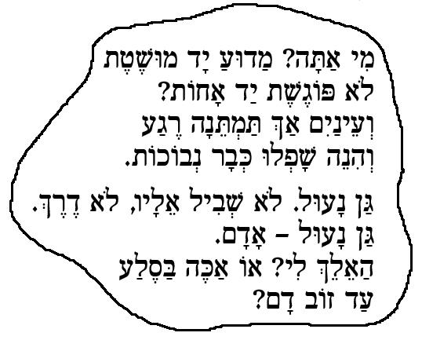

Nikud - Hebrew Culmus fonts in LaTeX with vowel-point placing
Project highlights
- Culmus fonts replaces poor Hebrew Metafonts.
- Good vowel-point placing
- Hebrew bibliography
- Smart Hebrew references
- Easy to use
An example of the output

Details
This project provides all the files needed to use Culmus fonts in Latex (elatex) with Hebrew
vowel-points (Nikud). Vowel-points are placed using type-3 Postscript
fonts that wrap
Culmus fonts. The Type-3 fonts are an implementation of a method
publish by Sivan Toledo for Vowel-point
placing.
The package currently uses Culmus fonts from version 0.93, and includes
all the needed fonts.
Also included, is a modified version of varioref.sty package -- variorefh.sty, and a modified
version of multibib.sty
-- multibibheb.sty. These
are for Hebrew cross-referencing and bibliography. See samples
Downloading and installing
Project page in Berlios: http://developer.berlios.de/projects/nikud/
A remark on texmf tree
If you want to work locally (recommended), make sure you have a local
texmf tree: edit texmf.cnf
(you may use kpsewhich texmf.cnf
to find its location), and add $HOMETEXMF
to the search path (in Mandrake 9.1 and 9.2 this is default so you
don't have to do anything, but in 9.0 you have to make the change).
There are three option for downloading and installing the package:
The texmf tree
- Untar nikud_texmf-x.y.z.tar.bz2
into your main or local texmf tree
- Become root (su).
- Add the line:
p +culmus.map
to the file config.ps.
You may find where it is by running:
kpsewhich --format="dvips
config" config.ps
- Run mktexlsr
Source (Linux only)
To compile the fonts, the following packages must be installed: tetex, afm, tetex-latex, dvips, iconv,
perl.
- Untar nikud_source-x.y.z.tar.bz2.
- Edit Makefile and
set the variables as you like (you really don't have to change anything
if you work locally).
- Run make
- Run make install
- Become root (su).
- Add the line:
p +culmus.map
to the file config.ps.
You may find where it is by running:
kpsewhich --format="dvips
config" config.ps
RPM
Just install nikud-x.y.z-r.i586.rpm.
How to use
preparing the source file
You have to use the installed package culmus.sty:
\documentclass...
\usepackage{culmus}
(babel is
implicitly included by culmus.sty)
Source file should be cp1255
encoded (or ISO-8859-8, if
you don't need Nikud). You may edit your source file in Unicode (UTF-8)
and convert it to cp1255 with iconv.
Running latex
- To create a postscript file, use elatex
and dvips.
- To create a pdf file run ps2pdf
or
some other distiller on your .ps
file.
Important: Do not use pdflatex or
dvipdf(m) if you are using Hebrew vowel-points (Nikud).
Samples
Samples are in texmf/doc/latex/nikud/samples
directory (see the Makefile there). The source is utf-8 encoded. You
may use emacs-bidi as an
editor.
Links
Culmus fonts: culmus.sf.net
Emacs Bidi: http://www.m17n.org/emacs-bidi/,
and my .emacs file: ftp://ftp.berlios.de/pub/nikud/utils/.emacs
This project is hosted by